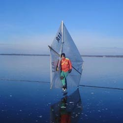

Skridskosegling
Skridskosegling är en hisnande seglingsupplevelse som knappast kan beskrivas, den måste upplevas. Med ett femkantigt segel når man farter uppemot 90 km/tim en fin dag. Seglaren och riggrören befinner sig på läsidan av seglet och man kan säga att seglaren själv utgör nedre delen av masten. Man får direktkontakt med seglet, känner vindändringar direkt i kroppen och parerar med invanda reflexer. Däri ligger en stor del av skridskoseglingens tjusning.
Historik
Redan från stenåldern tyder fynd på att skridskor användes och säkert förstod man tidigt att utnyttja vinden. Den egentliga skridskoseglingen utvecklades på 1800-talet och den första dokumenterade kappseglingen hölls på Lilla Värtan i Stockholm 1887. Man seglade med så kallade parallelltrapets segel som är enkla och lätta, men inte medger så stadigt grepp om riggen och därför kunde man inte föra större segel än 4 kvadratmeter. 1904 utvecklades drakseglet som ser ungefär likadant ut än idag. Svenska Isseglarförbundet bildades 1906 och är därigenom en av de äldsta idrotterna inom Svenska Riksidrottsförbundet.
Utrustning
Man använder ett segel och riggrör, som kan packas ner i ett skidfodral. Vid segling används helst slalompjäxor och seglingsskridskor som kan vara upp mot 20 cm höga. Med slalompjäxor är det inte särskilt svårt att balansera på höga skridskor, man står stabilt även i höga farter och de höga skridskorna medger att man kan luta sig mot vinden utan att skon tar i isen (för då tappar skridskon greppet). Man har alltid hjälm samt isdubbar och vi rekommenderar även knä-, armbågs- och höftskydd.
Skridskosegel kan köpas av duktige segelsömmaren och tillika svenske mästaren Mikael Brandt, Uppsala (ca pris 4-5000 kr) tel 018/462991. Seglingsskridskor på 14 eller 20 cm höjd kan köpas av Rune Johansson (ca pris 3-4000 kr) tel 013/120944. Aluminiumrör till att bygga riggen kostar ca 500 kr för en rigg, byggbeskrivning kan fås av Jörgen Åstrand eller hittas på skridskoseglings förbundets hemsida www.sisf.se.
Teknik
En film av Daniel Nerhagen
Innan man skridskoseglar kontrollerar man alltid isen inom det område man tänker segla så man vet att isen håller och är jämn i ytan. Att rigga seglet tar ca 10 minuter, sedan fattar man seglet och lyfter det över huvudet. Ett par skridskoskär mot vinden ger fart, sedan lägger man seglets kryss på axeln så att man står i lä om seglet. Man styr genom att luta sig framåt eller bakåt, framåt för att falla av från vinden och bakåt för att lova upp mot vinden.
Skridskoseglet bildar ingen perfekt vingprofil, eftersom seglaren trycker ut segelbuken mot lovart. Nackdelen av det är lite mindre effektivitet rent aerodynamiskt. Fördelarna är dock stora; i och med att seglaren står i seglet göms han från fartvinden så att luftmotståndet minskas jämfört med t.ex. en vindsurfingrigg. Dessutom blir seglet kursstabilare så att det blir lättare att parera vindvrid och -byar. Tack vare detta kan man stå på ena skridskon och segla i en vilsammare ställning med mer tryck och stabilitet på läskridskon som man står på. Man hanterar relativt enkelt ett 8,8 kvadratmeter stort segel även när fartvinden är över 20 m/s (72 km/tim). Det blir den redan vid en vindstyrka av 6-7 m/s. Stagvändningar och gippar går till som starten genom att man lyfter seglet över huvudet och styr till ny kurs med skridskorna. Friktionen är försumbar, så fartvinden blir förhållandevis stark och vrider upp den skenbara vinden till skenbar kryss oavsett vilken bog man seglar (utom i mycket svag vind). Därför får man själv hålla reda på vindriktningen, man kan inte lita på var man känner vinden ifrån. Om man ramlar när man seglar sker det oftast mot vinden. Det är ovanligt att man slår sig, men man kan glida ganska långt på isen!
Speciellt i svag vind är det tekniskt inte särskilt svårt att segla. Det krävs ingen särskild styrka och alla kommer igång så att man får känna glidet efter bara några försök. Men om det blåser mer är det lite knepigare och för att bli riktigt skicklig på att driva seglet med maximal fart som till exempel 14-faldige svenske mästaren Alexander Sahlin från Stockholm, krävs lång träning.
Kappseglingar
Man kappseglar på en triangelbana med kryss och slörar, där farten på slören kan vara upp mot fyra gånger vindhastigheten. Fartskillnaden beroende på seglingsskicklighet blir mycket större än vid båtsegling eftersom skridskoseglet inte begränsas av någon bogvåg eller deplacementsfart. Vid kappseglingar är det därför skicklighet att hela tiden hålla hög hastighet och inte tappa fart i manövrar som avgör mer än taktiska finesser.
Skånes Isseglarklubb
1976 bildades Skånes Isseglarklubb av några skridskoseglare på sjön Yddingen. När is finns seglar vi i Skånes isseglarklubb SM, DM och vår klubbkappseglingsserie Guano Cup, som fått sitt namn efter den lilla egenheten att Skånes gåspopulation efterlämnar visitkort i icke obetydlig mängd på våra sjöars isar. Det kan göra kappseglingarna riktigt spännande och obekräftade uppgifter gör gällande att klubbseglare som vid töväder vurpat i spillningshögarna utvecklat guanoallergi, men det är sannolikt bara elakt förtal!
För klubbens medlemmar och i mån av tid andra intresserade finns möjlighet att låna skridskosegel så att man kan provsegla. Seglingsansvariga i klubben är Jörgen Åstrand och Daniel Nerhagen som har utlåningssegel och utlånings skridskor med sig när de är ute och skridskoseglar. Ett par seglare till har oftast utlåningsutrustning med. Om man själv tar med sig isdubbar, slalompjäxor och hjälm av t.ex. cykelhjälmstyp kan man få prova på att skridskosegla efter överrenskommelse. Inom klubbens regi finns även isjaktsegling, ännu så länge i lite mindre skala. På klubbens telefonsvarare och klubbens seglingstelefonsvarare annonseras när is finns och var vi seglar. Telefonnummer till dessa får man tillgång till som medlem.
Love for sail!
Jörgen Åstrand Daniel Nerhagen
Seglingsföreskrifter
För tävlingar i skridskotävling finns vissa föreskrifter. Om du är nyfiken på att delta kan du ta del av dem här..
Länkar
Här har vi samlat lite matnyttiga länkar för dig som är skridskoseglare
